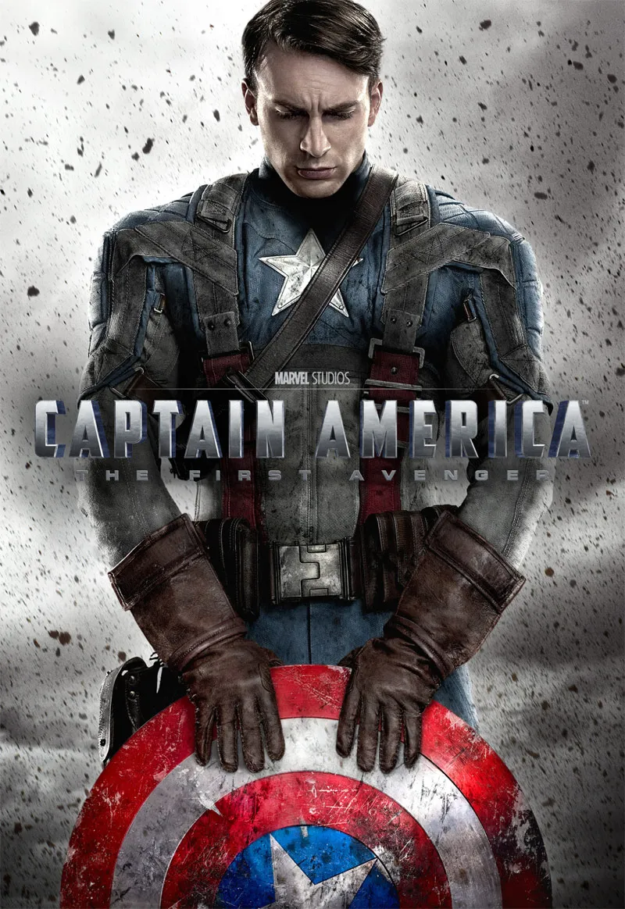

[FILME]
Capitão America:Primeiro Vingador
2011 • 2h 04min • Ação/Aventura
Steve Rogers se torna o Capitão América durante a Segunda Guerra Mundial e enfrenta a organização inimiga liderada pelo Caveira Vermelha.
Direção: Joe Johnston
Elenco: Chris Evans, Hugo Weaving, Hayley Atwell e Sebastian Stan
Nossa crítica
Capitão América: O Primeiro Vingador é um filme que conta a origem de Steve Rogers, um jovem que, mesmo sendo fisicamente fraco, sempre teve coragem e vontade de ajudar os outros. Depois de passar por um experimento que transforma seu corpo, ele se torna o Capitão América e precisa enfrentar a organização nazista Hidra e seu líder, Caveira Vermelha. Um dos pontos mais interessantes do filme é que Steve não se torna um herói apenas por causa do soro. Desde o começo, ele já demonstra coragem, honestidade e disposição para fazer o que é certo. Isso faz com que o personagem seja diferente de muitos outros heróis, já que sua principal qualidade não é a força, mas seu caráter. O filme também consegue criar uma boa ambientação durante a Segunda Guerra Mundial. As cenas de ação são divertidas e mostram Steve aprendendo a lidar com seus novos poderes e com o escudo. Ao mesmo tempo, a história apresenta Bucky Barnes, que possui uma relação importante com Steve e acaba tendo um papel fundamental na trajetória do personagem.
Veredito
Capitão América: O Primeiro Vingador é um filme que cumpre bem seu papel de apresentar a origem de um dos principais heróis da Marvel. A história é divertida, tem bons momentos de ação e mostra que Steve Rogers sempre foi um herói antes mesmo de receber seus poderes. Apesar de alguns personagens poderem ser mais desenvolvidos, o filme consegue emocionar e preparar bem a história para os próximos filmes